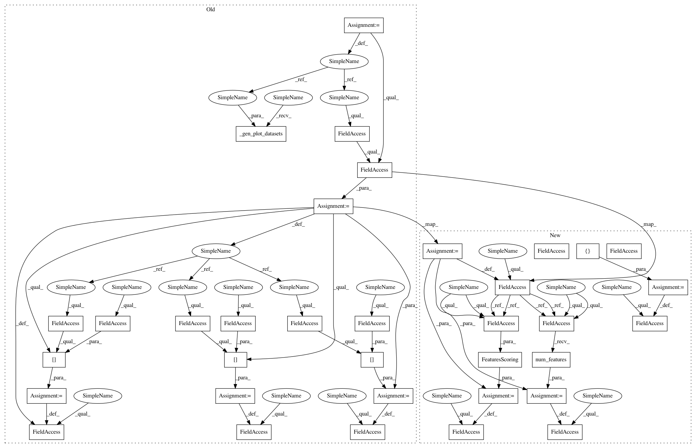

4732a4c18bc748a0d9e4fb6c1b519b7d54244a1c,secuml/core/features_analysis/plots.py,FeaturePlots,__init__,#FeaturePlots#Any#Any#Any#,34
Before Change
def __init__(self, instances, feature_index, with_density=True):
self.feature_index = feature_index
self.with_density = with_density
features_info = instances.features.info
self.feature_type = features_info.types[self.feature_index]
self.feature_name = features_info.names[self.feature_index]
self.feature_id = features_info.ids[self.feature_index]
self._gen_plot_datasets(instances)
def compute(self):
if self.feature_type == FeatureType.binary:
self._gen_binary_histogram()
After Change
from scipy.sparse.base import spmatrix
from secuml.core.data.labels_tools import BENIGN, MALICIOUS
from secuml.core.data.features import FeatureType
from secuml.core.tools.color import get_label_color
from secuml.core.tools.color import colors
from secuml.core.tools.plots.dataset import PlotDataset
from secuml.core.tools.plots.boxplot import BoxPlot
from secuml.core.tools.plots.barplot import BarPlot
from secuml.core.tools.plots.density import Density
from secuml.core.tools.plots.histogram import Histogram
In pattern: SUPERPATTERN
Frequency: 3
Non-data size: 35
Instances
Project Name: ANSSI-FR/SecuML
Commit Name: 4732a4c18bc748a0d9e4fb6c1b519b7d54244a1c
Time: 2019-05-15
Author: anael.beaugnon@ssi.gouv.fr
File Name: secuml/core/features_analysis/plots.py
Class Name: FeaturePlots
Method Name: __init__
Project Name: ANSSI-FR/SecuML
Commit Name: 7b414fbc6c221eb3a06f8a1c1a08c9dc13608e93
Time: 2019-05-03
Author: anael.beaugnon@ssi.gouv.fr
File Name: secuml/core/features_analysis/plots.py
Class Name: FeaturePlots
Method Name: __init__
Project Name: ANSSI-FR/SecuML
Commit Name: 58c5a4ceecf15ecd54d22e72e6f91dd596e0176d
Time: 2019-05-22
Author: anael.beaugnon@ssi.gouv.fr
File Name: secuml/core/features_analysis/plots.py
Class Name: FeaturePlots
Method Name: __init__
Project Name: ANSSI-FR/SecuML
Commit Name: 4732a4c18bc748a0d9e4fb6c1b519b7d54244a1c
Time: 2019-05-15
Author: anael.beaugnon@ssi.gouv.fr
File Name: secuml/core/features_analysis/plots.py
Class Name: FeaturePlots
Method Name: __init__